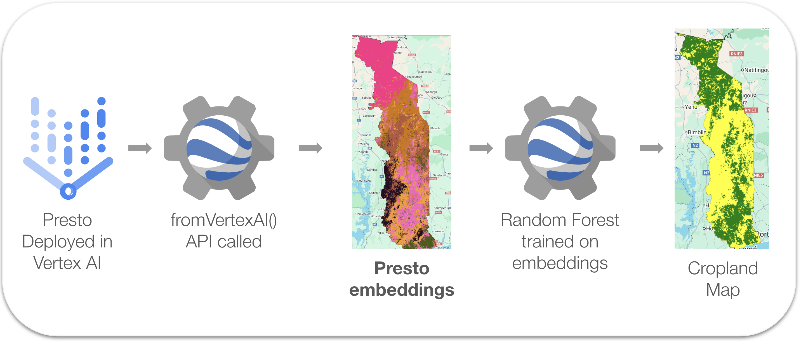

Presto Embeddings for Cropland Mapping
by Ivan Zvonkov, Gabriel Tseng, Hannah Kerner

Geospatial embeddings offer a novel, efficient, and accessible way to map landscape features.
In part 1 of this blog post, we show how to generate embeddings using a geospatial foundation model (Presto).
In part 2 we show that geospatial embeddings can be used to map cropland with high accuracy.
We have written and linked several Google Earth Engine scripts throughout the blog post,
the scripts can also be accessed through this repository:
https://code.earthengine.google.com/?accept_repo=users/izvonkov/presto
🛰️ Part 1: Generating Presto Embeddings
Why Generate Embeddings?
Presto geospatial embeddings provide a compressed representation of Earth Observation data, enabling more efficient mapping and analysis. Embeddings are generated by using the Presto encoder to compress location information, optical imagery (Sentinel-2), radar imagery (Sentinel-1), climatology data (ERA5), and elevation data (SRTM) over the course of a year. Each embedding contains 128 features representing a single 10m2 pixel on Earth. Embeddings can be used in place of raw Earth Observation data for various machine-learning tasks, such as classification, clustering, and anomaly detection. In order to use embeddings they must first be generated for the time frame and area of interest. We provide an open-source pipeline to do this using Vertex AI and Google Earth Engine.
Generating Embeddings
The embedding generation pipeline consists of two steps:
- Deploying Presto to Google Cloud Vertex AI in Google Colab

- Using the ee.Model.fromVertexAi function in Google Earth Engine
1_Generate_Embeddings
In step 2, we call the Vertex AI endpoint from Google Earth Engine, sending Earth observation data for our time frame and area of interest to the deployed Presto model. Once inference is complete, the embeddings are saved as an Earth Engine asset.
Once predictions are made, you must undeploy your model to stop incurring further charges. This can be done in the Vertex AI console or in the provided Google Colab notebook.
Cost Considerations
While Google Colab and Google Earth Engine (non-commercial) are free to use,
deploying Presto to Vertex AI and running large-scale inference incurs cloud costs.
The current cost formula is:
$5.37 - $10.14 / 1000 km2.
The cost formula is a range due to scaling in Google Cloud.
Small regions will tend toward the higher range,
and larger regions, such as all of Togo, will tend towards the lower range.
Case Study: Generating Embeddings for Togo
To test our pipeline, we generated embeddings for all of Togo (56,785 km2) for the time frame of March 2019 - March 2020. The embedding generation took 16 hours and cost $313.40. The final Togo asset size was 128.8 GB.
The asset can be accessed here:
https://code.earthengine.google.com/?asset=users/izvonkov/Togo/Presto_embeddings_v2025_06_19
It's important to note that Google Earth Engine has a default asset storage limit of 250 GB.
For larger assets, we recommend exploring
Cloud GeoTiff-Backed Earth Engine Assets.
Sanity Checking Embeddings
To verify that the embeddings contain meaningful information we cluster the embeddings
using k-means and visually compare the clusters to an existing land cover map (WorldCover 2020).
This requires just 9 lines of code:
2_Kmeans_clustering_embeddings
// Region of interest
var roi = ee.FeatureCollection("FAO/GAUL/2015/level2").filter(ee.Filter.eq('ADM0_NAME', 'Togo'));
Map.centerObject(roi, 7)
// Load and cluster embeddings
var embeddings = ee.Image("users/izvonkov/Togo/Presto_embeddings_v2025_06_19")
var training = embeddings.sample({region: roi, scale: 10, numPixels: 10000});
var trainedClusterer = ee.Clusterer.wekaKMeans(7).train(training);
var result = embeddings.cluster(trainedClusterer);
Map.addLayer(result.randomVisualizer(), {}, 'clusters');
// Display WorldCover
var WorldCover = ee.ImageCollection('ESA/WorldCover/v200').first().clip(roi)
Map.addLayer(WorldCover, {bands: ['Map']}, 'WorldCover')
We see that the clusters visually align well with the land cover map. In particular, the green embedding cluster correlates very closely with built-up areas in the land cover map. This suggests that the embeddings capture meaningful information about the land cover in Togo and can be used for further mapping and analysis.
🌾 Part 2: Mapping Cropland in Togo using Embeddings
Why use embeddings for mapping?
Embeddings are a compressed version of processed Earth Observation data. So using embeddings for mapping will be more computationally efficient compared to using traditional Earth Observation data. Using embeddings also makes it possible to skip data processing (such as cloud processing) altogether.
How does it work?
A traditional mapping approach usually involves the following:
- Loading Earth Observation data for the region of interest.
- Loading labeled points representing the classes to be mapped.
- Creating a training dataset by combining labeled points with Earth Observation data.
- Training a classifier (e.g. Random Forest) on the training dataset.
- Classifying all the Earth Observation data using the trained classifier.
- Loading embeddings for the region of interest.
- Loading labeled points representing the classes to be mapped.
- Creating a training dataset by combining labeled points with embeddings.
- Training a classifier (e.g. Random Forest) on the training dataset.
- Classifying all the embeddings using the trained classifier.
Mapping Cropland in Togo
We need just 12 lines of code to map cropland using embeddings in Togo: 3_Togo_cropland_presto.We use a random forest classifier with 100 trees. We initially saw a lot of crops in the output and so used a probability threshold of 0.7.
// 1. Load embeddings for region of interest
var roi = ee.FeatureCollection("FAO/GAUL/2015/level2").filter("ADM0_NAME=='Togo'");
Map.centerObject(roi, 7)
var embeddings = ee.Image("users/izvonkov/Togo/Presto_embeddings_v2025_06_19")
// 2. Load Togo points
var points = ee.FeatureCollection("users/izvonkov/Togo/points_2019")
var trainingPoints = points.filter(ee.Filter.eq("subset", "training"))
// 3. Create training dataset (training points + embeddings)
var trainingSet = embeddings.sampleRegions(trainingPoints, ["is_crop"], 10 )
// 4. Train a classifier (100 trees)
var model = ee.Classifier.smileRandomForest(100).setOutputMode('probability')
var trainedModel = model.train(trainingSet, 'is_crop', embeddings.bandNames());
// 5. Classify embeddings using trained model
var croplandPreds = embeddings.classify(trainedModel).clip(roi)
var croplandMap = croplandPreds.gte(0.7).rename("map_crop")
// 6. Display cropland maps
var classVis = {min: 0, max: 1.0, palette: ['yellow', 'green']}
Map.addLayer(croplandMap, classVis, 'Presto Embeddings Based Cropland');
The resulting cropland map is generated in less than 5 seconds:
Alternative Embeddings: Google DeepMind
Google DeepMind recently released their own pixel-level
embeddings.
Here are some similarities and differences between the two:
| Presto Embeddings | DeepMind Embeddings | |
|---|---|---|
| Earth Engine Code |
ee.Image("users/izvonkov/Togo/Presto_embeddings_v2025_06_19")
|
ee.ImageCollection("GOOGLE/SATELLITE_EMBEDDING/V1/ANNUAL")
.filterDate("2021-01-01", "2022-01-01")
.mosaic()
.clip(roi)
|
| Data Sources | Sentinel-1, Sentinel-2, ERA5, SRTM | Optical, radar, LiDAR, and other sources (Brown, Kazmierski, Pasquarella et al., in review) |
| Timeframe | March 2019 - March 2020 | January 2021 - January 2022 [earlier than 2021 not available] |
| Embedding Size | 128 values | 64 values |
| Scale | 10 m2 | 10 m2 |
| Data Type | uint16 |
double |
| Bytes per pixel | 256 | 512 |
We create an alternative cropland map with Google DeepMind embeddings by simply substituting:
ee.Image("users/izvonkov/Togo/Presto_embeddings_v2025_06_19")
with
ee.ImageCollection("GOOGLE/SATELLITE_EMBEDDING/V1/ANNUAL")
.filterDate("2021-01-01", "2022-01-01")
.mosaic()
.clip(roi)
Here is the updated script on Google Earth Engine:
4_Togo_cropland_deepmind.
Visual Assessment and Comparison
One way of comparing embeddings is visually assessing and comparing the generated cropland maps.
We display the embedding-generated maps below, in addition to the best available cropland maps in Togo.
Green represents crops and yellow is everything else. The displayed maps are:
- a cropland map derived from the WorldCover land cover map,
- the GLAD cropland map,
- the Presto embedding-based cropland map,
- the DeepMind embedding-based cropland map.
1. WorldCover
2. GLAD
3. Presto
Embeddings
4. DeepMind
Embeddings
Observations from examining the maps from a country level:
- Presto and DeepMind embedding-based have a similar cropland amount and distribution
- Presto and DeepMind embedding-based show more crops than WorldCover
- The South of Togo is where all maps have differences
- All maps with the exception of GLAD correctly identify built-up areas as non-crop (yellow)
- Embedding-based maps appear to classify more cropland (green) correctly
- The DeepMind embedding-based map over predicts crops in some shrub/tree areas
- Presto embedding-based map visually accurately identifies many of the tree areas as non-crop
Metrics Assessment and Comparison
To get a more comprehensive understanding of the map quality we conducted an accuracy assessment using the Togo test set from CropHarvest. It's important to note that Presto was benchmarked against CropHarvest.
| Metric / Cropland Map | WorldCover | GLAD | Presto Embeddings |
DeepMind Embeddings |
|---|---|---|---|---|
| Overall Accuracy | 0.880 | 0.859 | 0.897 | 0.859 |
| User's Accuracy | 0.892 | 0.821 | 0.833 | 0.745 |
| Producer's Accuracy | 0.647 | 0.627 | 0.784 | 0.745 |
| F1-Score | 0.750 | 0.711 | 0.808 | 0.745 |
Script for assessment: 6_Togo_cropland_embeddings_metrics
Concluding Thoughts
We show that using Presto embeddings for cropland mapping is simple, quick, and effective. Our results indicate the potential for using embeddings for more effective mapping in different regions and for different use cases.
This work was supported by the NASA Harvest Consortium.